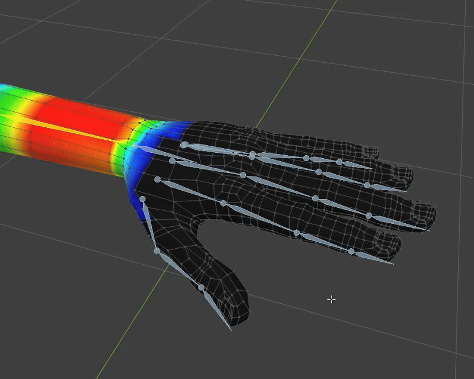
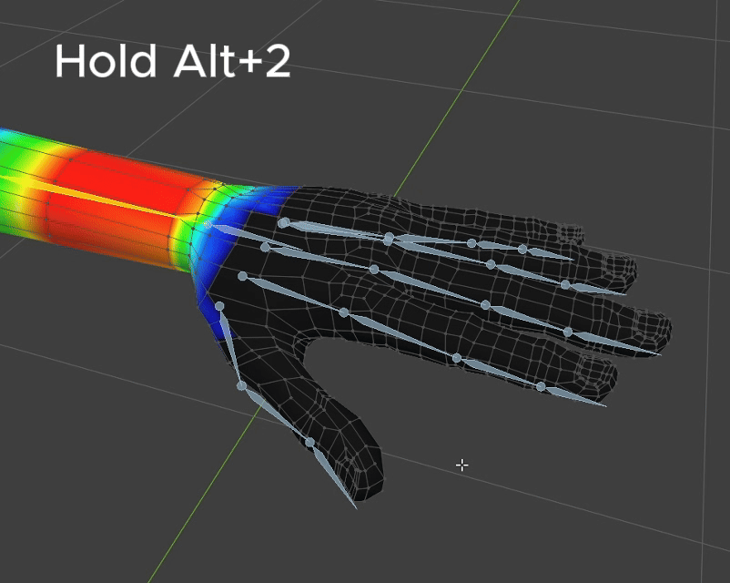
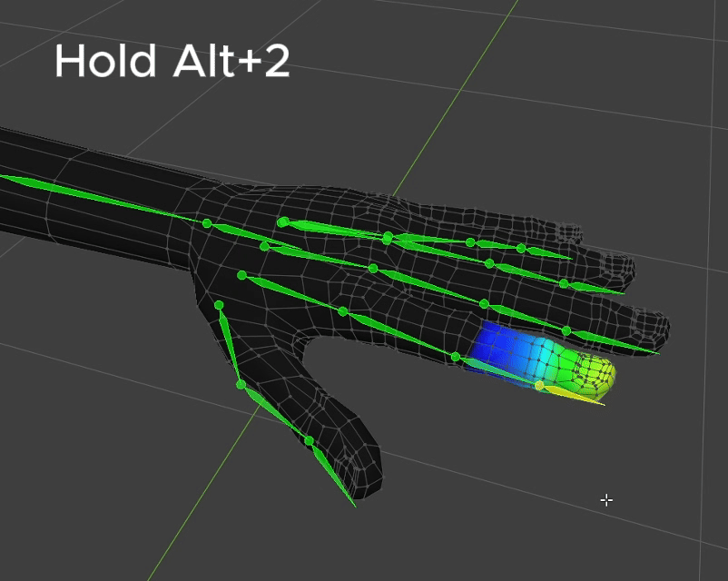
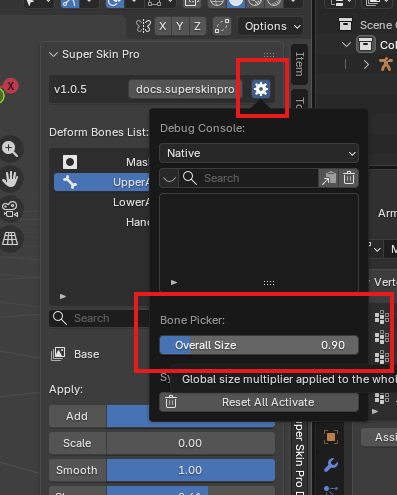

Bone Picker Shortcut¶
You can select a vertex group through the Deform Bone List, but in most cases it's faster to select it directly through the Bone shown in the viewport.
Hold Alt+2 to enter Bone Picker mode (you'll notice a "Bone Picker" text label appear in the viewport).
While in Bone Picker mode, you have these additional shortcuts:



Preview Weight Color ( Hover ): As you hover your cursor over a bone, you'll immediately see a preview of that bone's Overlay Color.
Select Active Bone ( Release ): Releasing the shortcut selects whichever bone is currently hovered.
Append Bone ( Left Click ): Adds more bones to the selection.
Remove Bone ( Middle Click ): Deselects bones.
Cancel Bone Picking ( Right Click ): Cancels and exits Bone Picker mode immediately.
Bone Size Adjusting¶
You can adjust the bone display size via Setting > Bone Overlay Size.
